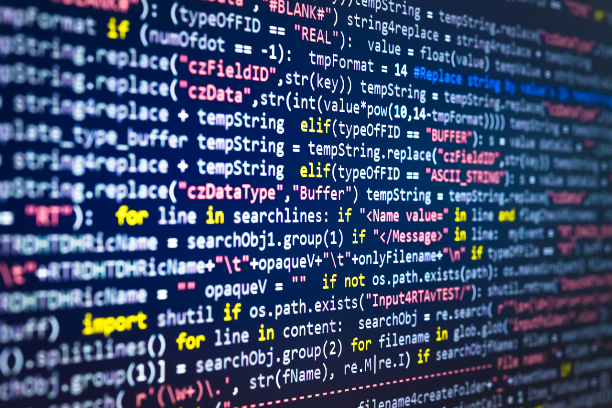

Menu
- Máterias básicas
- Materias especificas
Algoritmo

- Qual o resultado dessa operaçao: "1" + "1" = ?
- "11"
- 11
- 2
- 1"1"
- N.D.A
- Para que serve um laço for?
- repertir codigo indeteminadamente
- repetir codigo quantas vezes o usuário quiser
- somar dois numeros
- criar variaveis
- N.D.A
- Qual o resultado dessa operaçao: 10 % 2 = ?
- 5
- 1
- 10
- 0
- N.D.A
- Para que serve um laço while?
- repertir codigo inderteminadamente
- repetir codigo quantas vezes o usuário quiser
- somar dois numeros
- criar variaveis
- N.D.A
- O que signifa esse simbolo !=
- igual
- atribuiçao
- soma
- diferente
- NDA
- O que signifa esse simbolo ==
- igual
- atribuiçao
- soma
- diferente
- NDA
- O que signifa esse simbolo =
- igual
- atribuiçao
- soma
- diferente
- NDA
- O que signifa esse simbolo +
- igual
- atribuiçao
- soma
- diferente
- NDA
- (a = 1.2) a variavel a é do tipo...
- inteiro
- boolean
- float
- string
- a
- (a = "1.2") a variavel a é do tipo...
- inteiro
- boolean
- float
- string
- a